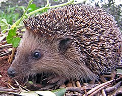

Ježevi _Erinaceidae) su porodica sisavaca. Najpoznatiji pretstavnici porodice koji žive u Europi su tamnoprsi (Erinaceus europaeus) i bjeloprsi ježevi (Erinaceus concolor). Porodica obuhvaca ukupno 25 vrsta, podijeljenih u dvije potporodice, prave ježeve i štakorske rovke ili, kako ih još cesto nazivaju gimnure, koji nemaju bodlje. Mjesto ježeva u sistematici je još uvijek sporno. Razmatra se, treba li ih i dalje svrstavati u kukcojede, ili im dodijeliti vlastiti red, koji bi se zvao Erinaceomorpha na temelju pripadnosti grupi viših sisavaca. Novija istraživanja cine sve vjerojatnijom prvu, dosadašnju varijantu.
| Jež |
|---|
|  |